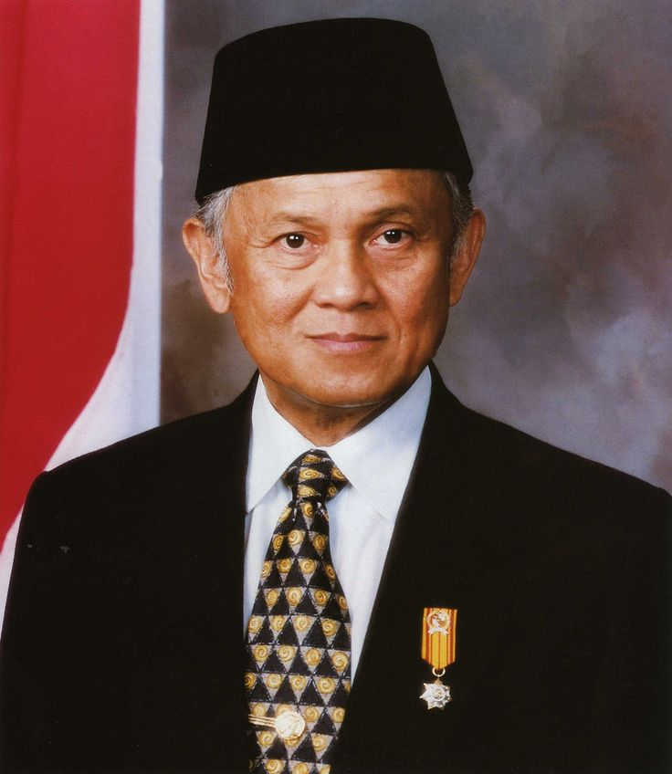

Login CSS
Daftar
Landing
JavaScript
Produk Array
Produk Tapi
Produk
Provinsi
Presiden
Home
NAMA - NAMA PRESIDEN DI INDONESIA
Biodata
Nama : Soekarno
Tempat, Tanggal Lahir : Blitar, 6 Juni 1901
Wakil Presiden : Drs. Moh Hatta
Masa Jabatan : 17 Agustus 1950 - 12 Maret 1967
Biodata
Nama : Soeharto
Tempat, tanggal Lahir : Argomulyo, 8 Juni 1921
Wakil Presiden : BJ Habibie
Masa Jabatan : 27 Maret 1968 - 21 Mei 1998

Biodata
Nama : BJ Habibie
Lahir : 6 Juni 1901
Wakil Presiden : BJ Habibie
Masa Jabatan : 21 Mei 1998 - 20 Oktober 1999
Biodata
Nama : Abdurrahman Wahid
Lahir : Denayar, 7 September 1940
Wakil : Megawati Soekarno Putri
Masa Jabatan : 20 Oktober 1999 - 23 Juli 2001
Biodata
Nama : Megawati Soekarnoputri
Lahir : Yogyakarta, 23 Januari 1947
Wakil : Abdurrahman Wahid
Masa Jabatan : 23 Juli 2001 - 20 Oktober 2004
Biodata
Nama : Susilo Bambang Yudhoyono
Lahir : Pacitan, 9 September 1949
Wakil : Muhammad Jusuf Kalla
Masa Jabatan : 20 Okt 2004 - 20 Oktober 2014
Biodata
Nama : Ir. Soekarno
Lahir : Surakarta 21 Juni 1961
Wakil : Ma'aruf Amin
Masa Jabatan : 20 Oktober 20114 - Sekarang